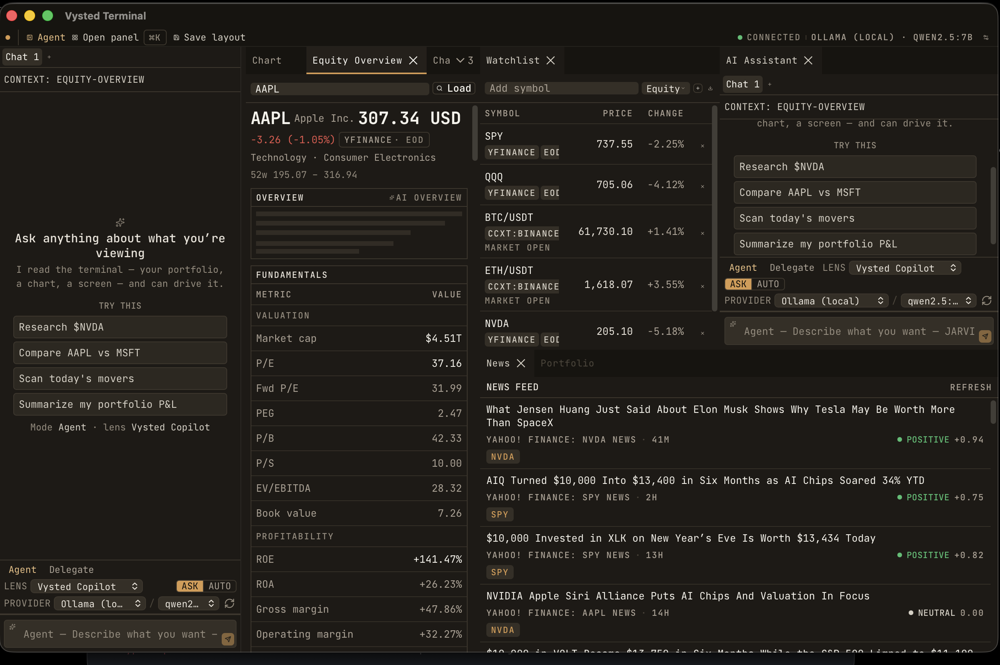
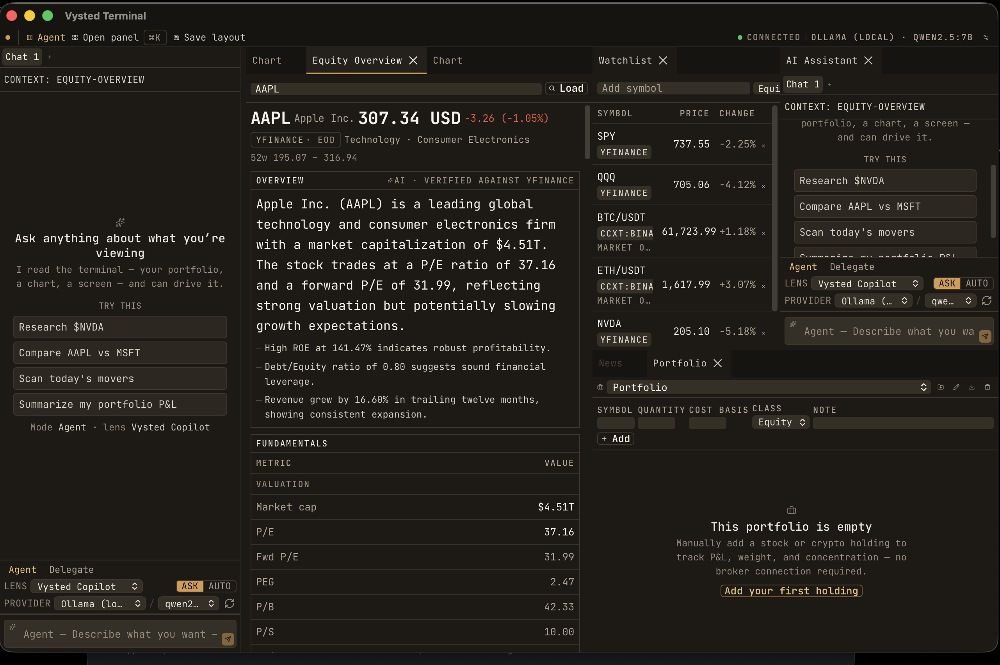
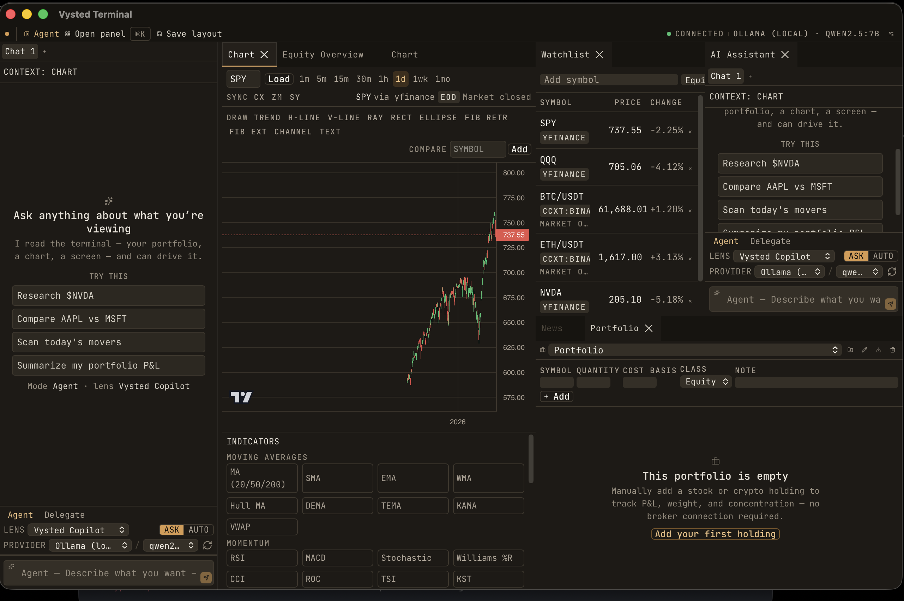
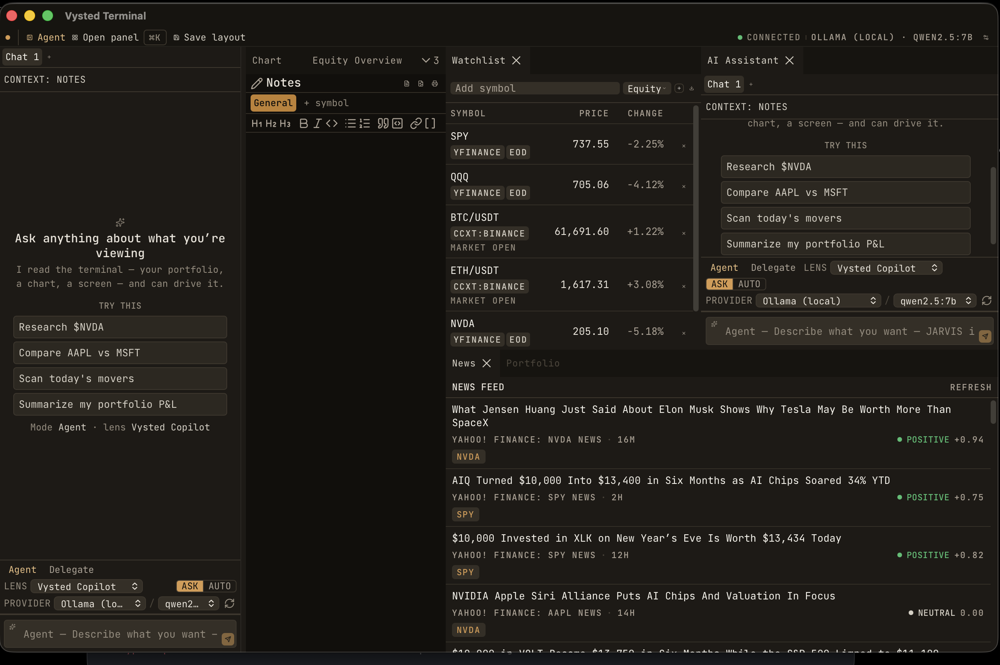
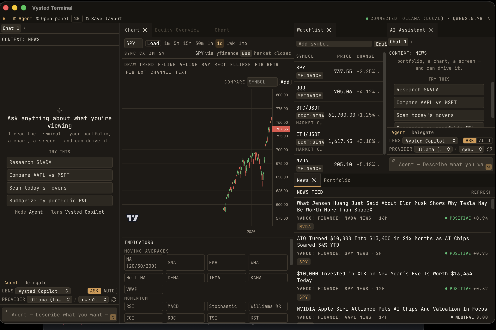
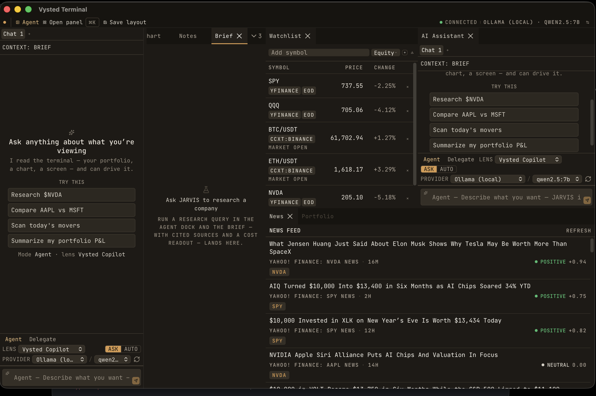
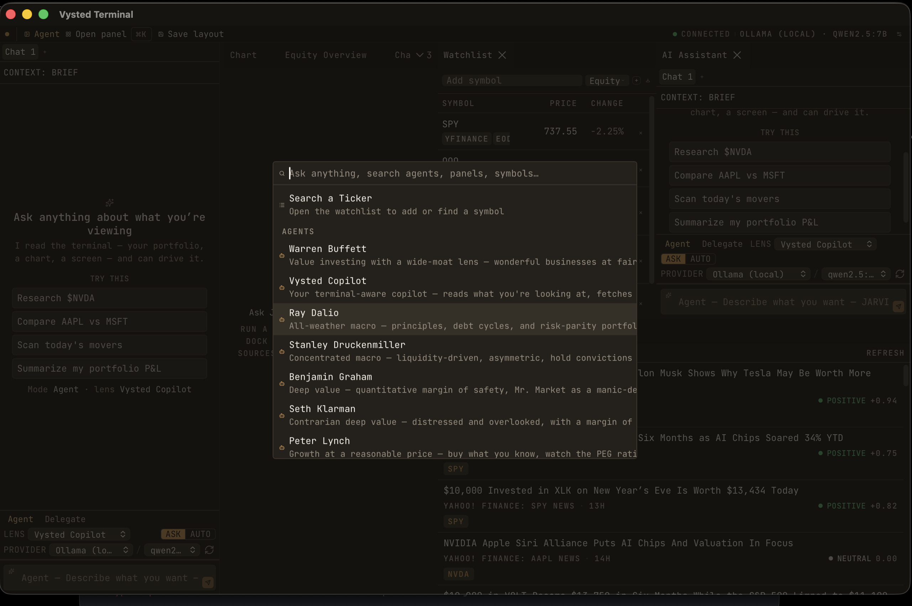

Branch 004-r4-experience-rebuild · captured on the
live pnpm tauri:dev window via macOS Quartz
(screencapture of the real WKWebView, not the DOM) · AAPL loaded.
Images: docs/redesign/verification/r6real2/.
What this pass did. Tightened the already-rendering OpenCode-dark foundation to faithful fidelity — surgical className/token edits only, no rebuild — then drove the reachable surfaces on real pixels and verified each.
Fixes applied & gate-green (typecheck / lint / prettier / vitest all pass):
backdrop-blur on
the node-editor Load/Save dialogs.sky/emerald) and PlanView
(sky) badges neutralized.bg-positive/warning/negative fills.rounded-full status block
→ rounded-none; dropped font-semibold that was
downgrading 700-weight headings.max-w-0 overflow-hidden
that clipped prices mid-number.rounded-control + fixed 36px height;
description-truncation attempted (see NEEDS-MANUAL below).| Surface | Status | Notes |
|---|---|---|
| Cockpit shell (OpenCode-dark) | Verified | Full JetBrains Mono, warm-graphite #110f0c, sharp 0px, single amber accent, no glow/blue. |
| Equity Overview (AAPL) | Verified | Mono headline + AI narrative at prose 16/1.6; fundamentals are a real statement table, values right-aligned tabular; loss in restrained red. |
| Chart toolbar | Verified | Active timeframe is now a raised surface, not an amber-fill pill; warm candle theme, no blue/glow. |
| News feed | Verified | Clean headlines + source/time; sentiment is colored text (POSITIVE +0.94), not a fill; symbol badges. |
| Notes (chrome + toolbar) | Verified | Visible formatting toolbar present: H1/H2/H3, bold, italic, code, list, quote, link, wikilink as ghost icons. |
| Watchlist | Verified | Tabular right-aligned prices, neutral source badges, restrained red/green change column. |
| Research Brief | Needs-manual | Empty-state placeholder verified (top-anchored, composed). Metric cards + de-filled ticker/cite chips are code-fixed but need a live research run to render (typing blocked, see below). |
| ⌘K command palette | Partial | Group headers visible & rows are mono + structured (primary spec met). Long agent descriptions still hard-clip instead of ellipsis-truncating — see NEEDS-MANUAL. |
| Screener / Quant / Macro / SEC / Analyst / Earnings / Backtest / Agent-builder / Node-editor / Marketplace / Broker / Plugin-manager / Settings | Needs-manual | Code-fixed (amber/glow/tint/table fixes applied + gate-green) but not real-pixel-verified: these panels are only reachable by typing a search in ⌘K, which the environment's input tier blocked. See constraint note. |


AAPL Apple Inc. 307.34 USD with the loss in restrained red.METRIC | VALUE is a real table — values right-aligned tabular ($4.51T, 37.16), no collisions or mid-number clip.




min-w-0 down the cmdk tree, grid-cols-1 on the grid DialogContent, a [cmdk-list-sizer] width rule, and a wider max-w-3xl); all are in the served JS+CSS but the dialog still measures ~512px in the WKWebView — a residual tailwind-merge/cascade interaction that needs a devtools computed-style check to close.The macOS input layer classified the app as a "terminal/IDE" (its name contains
Terminal) and granted it at the restricted click-only tier: the window
is visible and left-clickable, but typing, key-presses (so no ⌘K key), right-click
and drag are blocked, and the tier can't be relaxed without editing the Tier-1-locked
tauri.conf.json. Everything reachable by clicking (quick-load buttons,
watchlist rows, the "Open panel" launcher, dock controls, the curated palette actions)
was driven and verified on real pixels. Panels reachable only by typing a ⌘K search
(screener, quant, macro, sec, analyst, earnings, backtest, builders, marketplace, broker,
plugin-manager, settings) could not be opened, so their fixes are code-applied and
gate-green but not pixel-verified.
tauri.conf.json, CI). Safety/broker edits were className/markup only — no §6.5, audit, kill-switch, or ABC logic touched.004-r4-experience-rebuild; not merged to main. CLAUDE.md untouched.